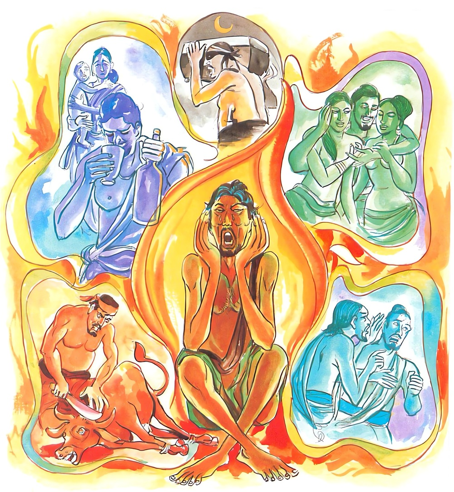

5-8 අටවන ගොවියාගේ කථාවස්තුවයි.
මෙම කතාව සද්ධර්ම සාගරයෙන් ද කියවන්න.
න තං කම්මං කතං සාධු යං කත්වා අනුතප්පති
යස්ස අස්සුමුඛො රොදං විපාකං පටිසෙවති.
යම් කර්මයක් කොට සිහි කළ කෙණෙහි තැවේ ද, යම් කර්මයක්හුගේ අනිෂ්ට විපාකය කඳුලු වැකුණ මුහුණැති ව හඬමින් අනුභව කෙරේ ද, එබඳු අකුසල් කම් කිරීම නො මැනැවි.

න තං කම්මං කතං සාධු ආදි මේ ධර්මදේශනාව ශාස්තෘන්වහන්සේ දෙව්රම වාසයකරන කාලයෙහි එක් ගොවියෙක් උදෙසා දේශනාකළහ.
ඒ ගොවියා සැවැත්නුවර සමීපයෙහි එක් කුඹුරක ගොවිතැන් කරයි. සොරු දියකාණුව දිගේම අවුත් නුවරට වැද එක් ධනවත් නිවසකට උමගක් හාරා බොහෝ රන්රුවන් සොරා ගෙන ඒ දිය ඇලින්ම නික්මුණාහුය. එක්සොරෙක් අනිත් සොරුන් රවටා එක් දහසක් බැඳි පියල්ලක් (පොදියක්) කොට ඒ කුඹුරට ගොස් ඔවුන් සමග භාණ්ඩ බෙදාගෙන යන්නේ වළලු ආදි ආභරණ පොදියෙන් ගිලිහී වැටුණු දහසක් බැඳි පියල්ල ගැන නොදත්තාහුය.
එදින බුදුරජාණන්වහන්සේ උදෑසන ලොව බලනසේක් ඒ ගොවියා තමන්ගේ ඥානදැලට පිවිසෙන බව දැක ඔහුට කුමක් සිදුවන්නේදැයි සොයාබලනසේක් මෙසේ දුටුසේක. මේ ගොවියා උදෑසනම සීසෑමට කුඹුරටයයි. භාණ්ඩ අයිතිකරුවෝ සොරුන්ගේ අඩිපාරදිගේ අවුත් දහසක් බැඳි පියල්ල දැක මොහු අල්ලාගන්නාහුය. මා හැර ඔහුට වෙනත් සාක්ෂියක් නැත. සෝවාන් වීමේ හේතු සම්පත්ද මොහුට ඇත. මා එහි යා යුතුයයි සිතූසේක.
ඒ ගොවියාද පාන්දරම සීසෑමට ගියේය. ශාස්තෘන්වහන්සේ ආනන්ද තෙරණුවනුත් සමග එහි වැඩිසේක. ගොවියා බුදුන් දැක ළඟට ගොස් වැඳ නැවත සීසාන්ට පටන් ගත්තේය. ශාස්තෘන්වහන්සේ ඔහු හා කිසිවක් කතානොකොටම දහසක්බැඳි පියල්ල වැටුණුතැනට ගොස් එය බලා, ආනන්ද සර්පයා දුටුවෙහිදැයි ඇසූහ. ස්වාමීනි, එසේය ඒ ඝෝරවිෂ සර්පයා දුටුවෙමියි කීහ. ගොවියා ඒ කථාව අසාගෙන සිට, මම වේලාවේත් අවේලාවේත් මෙහි හැසිරෙන්නෙමි. මෙහි සර්පයෙක් ඇතැයි සිතා, බුදුන් ආපසු වැඩි කල ඌ මරා දමන්නෙමියි කෙවිටත් රැගෙන එහි ගියවිට දහසින් බැඳි පියල්ල දැක, මේ සඳහා බුදුරජාණන්වහන්සේ සර්පයායයි කියන ලදහයි සලකාගෙන එය රැගෙන නැවතී නුවණැති හෙයින් එය එක් පැත්තක තබා පසින් වසා නැවත හාන්ට පටන්ගත්තේය.
මිනිස්සු රාත්රිය පහව ගියකල්හි සොරුන් ගෙදර කර තිබූ ක්රියාව දැක ඔවුනගේ පියවර සටහන් අනුව කුඹුරට ගොස් එහිදී සොරු භාණ්ඩ බෙදූ තැන දැක ගොවියාගේ පාගැසුනු තැන්ද දුටුවාහුය. ඔවුහු ගොවියාගේ පියවර සටහන් අනුව ගොස් පසුම්බිය තැබූ තැන දැක පස් විසුරුවා හැර පසුම්බිය රැගෙන තෝ ගෙවල් කොල්ල කා කුඹුරෙහි සීසාන්නාක් මෙන් සිටින්නෙහිදැයි තර්ජනය කොට තළාගෙන ගොස් රජුන්ට පෙන්වූහ. රජු ඒ පුවත අසා ඔහුට දඬුවම් නියම කෙළේය. රාජපුරුෂයෝ ඔහුගේ දෙඅත් පිටුපසටකොට බැඳ කසයෙන් තළමින් ඝාතනය කරනතැනට ගෙනගියහ. ගොවියා කසයෙන් තළද්දී වෙන කිසිවක් නොකියා, පස්සානන්ද ආසිවිසොති, පස්සාමි භන්තෙ ඝෝරවිසොති (ආනන්ද සර්පයා දැක්කෙහිද, එසේය ස්වාමීනි, ඝෝරවිෂයා දැක්කෙමි) යන්න පමණක් කියමින් යයි.
ඒ ඇසූ රාජපුරුෂයෝ, තෝ බුදුන්ගේත් අනඳ තෙරුන්ගේත් කථාවක් කියන්නෙහිය. මේ කිමෙක්දැයි විචාරා, රජුන් දකින්ට ලැබුණොත් කියන්නෙමියි කීකල්හි, රජු සමීපයට පමුණුවා රජුට ඒ පුවත කීවාහුය. ඉන්පසු රජු කුමක් නිසා මෙසේ කීවෙහිදැයි විචාළේය. හෙතෙම දේවයන්වහන්ස, මම සොරෙක් නොවෙමියි සීසෑම පිණිස පිටත්වී ආ තැන් පටන් සියලු පුවත් රජුට කීවේය.
රජු ඒ කථාව අසා, පිනැතියෙනි, මොහු ලොව අග්ර පුද්ගලවූ ශාස්තෘන්වහන්සේ සාක්ෂි වශයෙන් ඉදිරිපත් කරයි. මොහුට දෝෂාරෝපණය අයුතුයි. මම මීට කළයුත්ත දනිමියි ඔහුත් රැගෙන සවස් වේලාවෙහි බුදුන් වෙතගොස් ස්වාමීනි, අනඳ තෙරණුවෝත් සමග ඔබවහන්සේ මේ ගොවියා සානා තැනට වැඩියාහුදැයි විචාළේය. එසේය මහරජ, ඔබවහන්සේලා එහිදී කුමක් දුටුවාහුද? දහසක් බැඳි පසුම්බිය දුටුවෙමු. එය දැක කුමක් කීවාහුද? මහරජ මෙසේ කීවෙමු. ස්වාමීනි, යම් හෙයකින් මේ පුරුෂයා ඔබවහන්සේ වැනි කෙනෙක් සාක්ෂි වශයෙන් ඉදිරිපත් නොකෙළේ නම් ඔහුගේ ජීවිතය නොලැබී යන්නේය. ඔබවහන්සේ කළ කථාව කියා ඔහු ජීවිතය ලැබීය. ඒ අසා ශාස්තෘන්වහන්සේ, එසේය මහරජ මමත් එපමණක්ම කියා ගියෙමි. නුවණැත්තා විසින් යම් කර්මයක් කොට පසුතැවීමක් ඇතිවේනම් එබඳු කර්මයක්නොකටයුතු යයි කියා පූර්වාපරසන්ධි ගළපා ධර්ම දේශනා කරමින් මේ ගාථාව වදාළහ.
කඳුළු පිරි දෑසින් හඬහඬා දුක් විඳිමින්
පසුතැවිලි වන වැඩ කිසි විටක නොම කළයුතු
එහි න තං කම්මං යනු නිරයාදියේ උපදවන්නට සමත් දුක් උපදවාගෙන ක්රියාකොට පසුව සිහිකරන්නේ, සිහිකරන හැම මොහොතකම ඒ අනුව තැවෙයිද, ශෝක කෙරෙයිද, ඒ කළ ක්රියාව නුසුදුසුය. සුන්දර නොවෙයි. යස්ස අස්සු මුඛො යනු යමෙකුගේ ඇස් කඳුළින් තෙමී අඬමින් විපාක විඳියි.
දේශනාවසානයෙහි ගොවි උපාසකතෙම සෝවාන්ඵලයට පැමිණියේය. පැමිණි භික්ෂූහුද සෝවාන්ඵලාදියට පැමිණියාහුය.